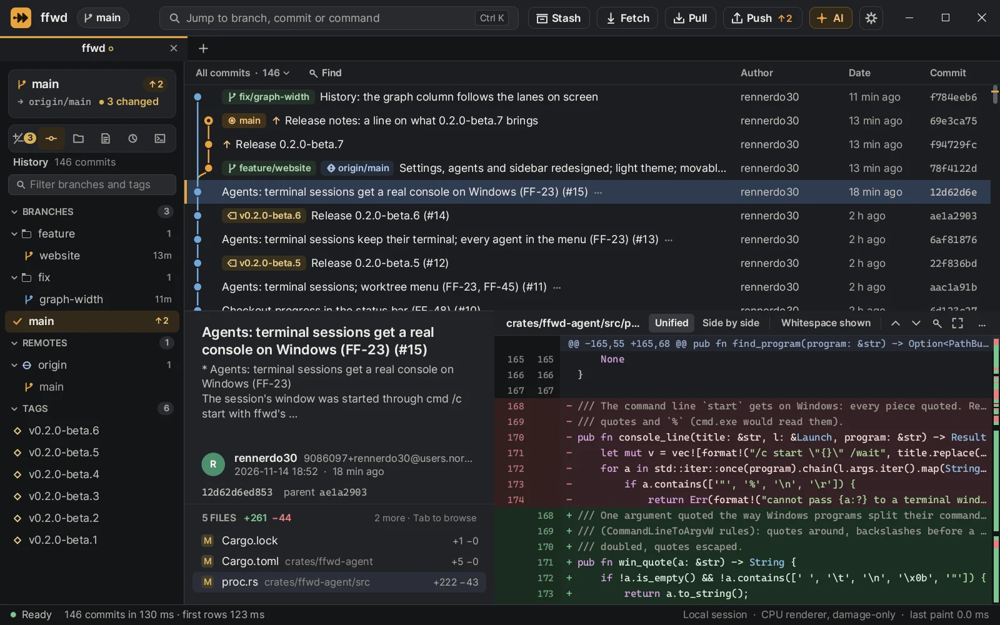
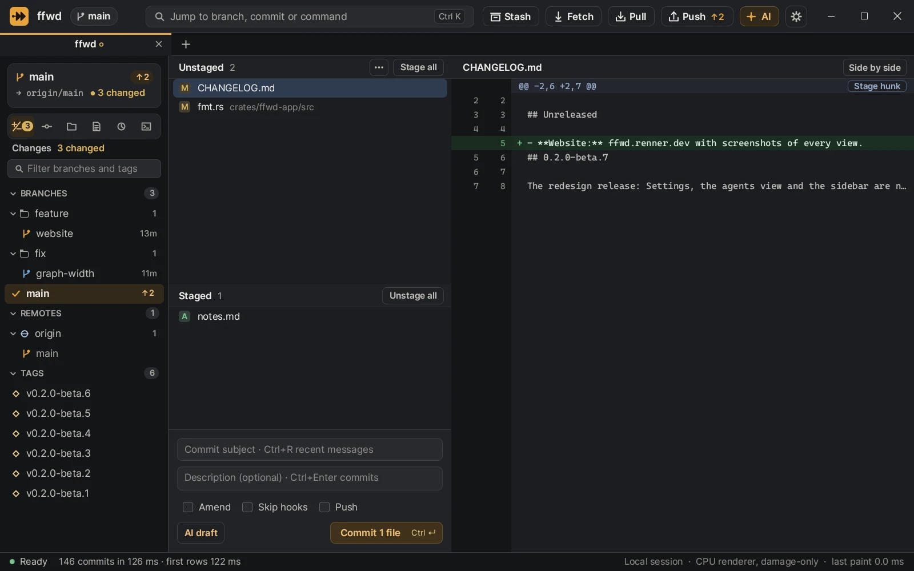
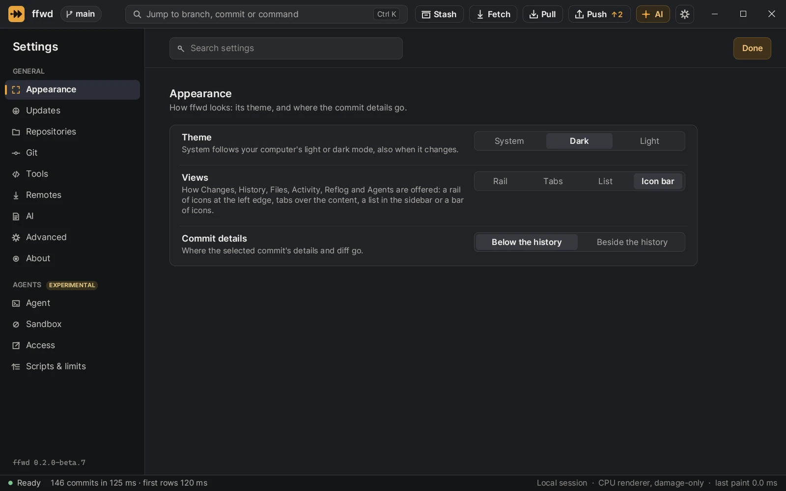
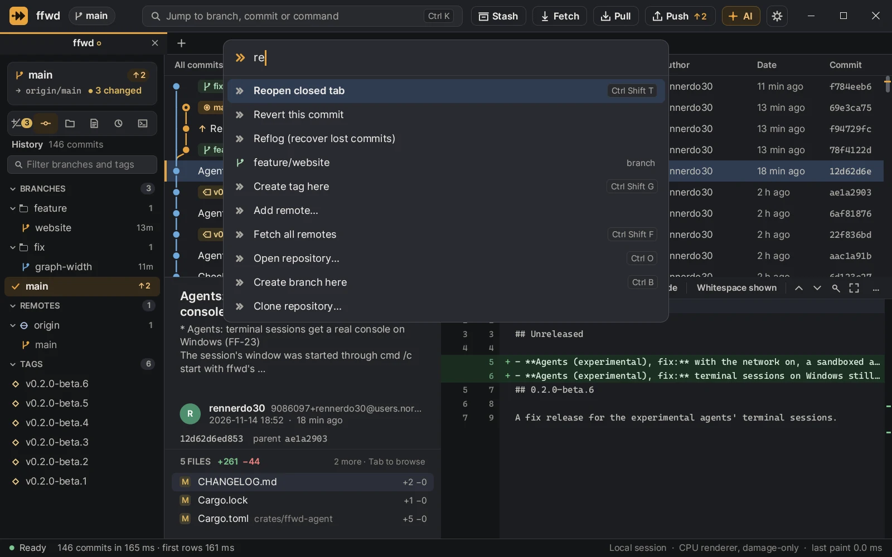

Your work is safe
Hard reset, discard, force push and deleting branches ask first and name exactly what will be lost. ffwd never edits Git's internals by hand: every write goes through Git itself, with the same results as the command line.
Beta Free and open source, written in Rust
ffwd (say fast-forward) is a desktop Git client that answers every click in the same frame. The window is up before Git has finished starting, history streams in while you read, and nothing you do ever freezes it.
Windows, macOS and Linux.

Most Git clients make you watch them think: a blank pane while the history loads, a spinner after every click, a window that stops answering during a long fetch. ffwd is built the other way round.
The window and its chrome are painted before any Git work finishes. The first commits appear as soon as they are parsed, not after the whole log. Git, file access, diffs and network requests all run on worker threads, so the window only ever handles your input and paints.
Lists are virtual: ffwd lays out the rows you can see, whether the repository has a hundred commits or a million.
Measured, not promised
Release builds on the maintainer's Windows PC (Ryzen 9 9950X3D), 13 and 14 November 2026. Laptops and remote sessions are measured next; the specification lists every budget.
Everything you do in Git every day, with a button for it, a menu entry and a shortcut. Destructive actions ask first and say exactly what you would lose.

ffwd draws with the CPU and paints only what changed. Move the selection and two rows and the details pane are sent to the screen, nothing else. Scrolling is a copy of the pixels already there, plus the rows that came into view.
That is what remote desktop needs: every repainted pixel crosses the network. In a remote session ffwd switches to solid colours, no animations and no blinking cursor, so the picture compresses well and stays sharp.
When nothing changes, ffwd does nothing at all: no frames, no wakeups, no fans.


Hard reset, discard, force push and deleting branches ask first and name exactly what will be lost. ffwd never edits Git's internals by hand: every write goes through Git itself, with the same results as the command line.
Commit messages from a model you choose, off until you set an endpoint, local servers first. Before anything is sent you see exactly what will be sent, and secrets and ignored files are never included.
No account, no telemetry. ffwd talks to your Git remotes, the update check and, only if you set one up, your AI endpoint.
ffwd is in beta: it is good for daily work, but not every feature of the feature list is done yet. Tell us what you miss and what breaks.
ffwd , released .
Downloads are on the releases page.
The Windows installer needs no admin rights and adds a Start menu entry and an uninstaller; ffwd then updates itself. The builds are not signed yet, so the system warns on the first start. Check downloads against SHA256SUMS; the installation guide has the details.
Needs a Rust toolchain; rustup picks the right version from the repository.
git clone https://github.com/rennerdo30/ffwd
cd ffwd
cargo run --release -p ffwd -- path/to/repo